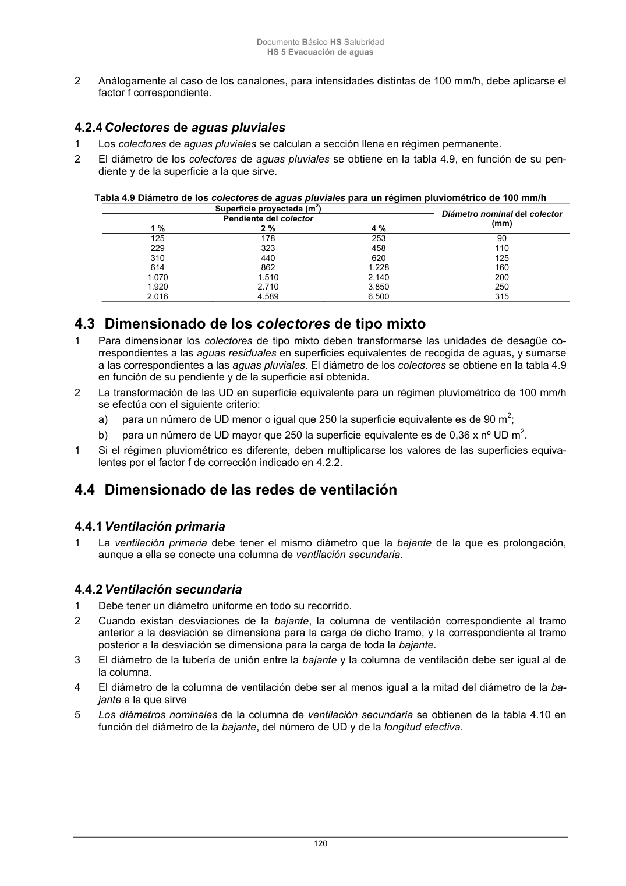

DB-HS Salubridad · edición 2022-06-14 · capa oficial
Documento DB-HS-oficial · SHA-256 del PDF 68df3caacc95f71aee2ec1ba7b2c65ae66155c21e3a8785521b8fdd4fd640d3b
Página física 120 de 184.
Copia fiel del PDF fuente · Fuente oficial
Ficha de la disposición en la fuente oficial
Formato: Texto de la página (Markdown)
Documento Básico HS Salubridad HS 5 Evacuación de aguas 120 2 Análogamente al caso de los canalones, para intensidades distintas de 100 mm/h, debe aplicarse el factor f correspondiente. 4.2.4 Colectores de aguas pluviales 1 Los colectores de aguas pluviales se calculan a sección llena en régimen permanente. 2 El diámetro de los colectores de aguas pluviales se obtiene en la tabla 4.9, en función de su pen- diente y de la superficie a la que sirve. Tabla 4.9 Diámetro de los colectores de aguas pluviales para un régimen pluviométrico de 100 mm/h Superficie proyectada (m 2) Diámetro nominal del colector (mm) Pendiente del colector 1 % 2 % 4 % 125 178 253 90 229 323 458 110 310 440 620 125 614 862 1.228 160 1.070 1.510 2.140 200 1.920 2.710 3.850 250 2.016 4.589 6.500 315 4.3 Dimensionado de los colectores de tipo mixto 1 Para dimensionar los colectores de tipo mixto deben transformarse las unidades de desagüe co- rrespondientes a las aguas residuales en superficies equivalentes de recogida de aguas, y sumarse a las correspondientes a las aguas pluviales. El diámetro de los colectores se obtiene en la tabla 4.9 en función de su pendiente y de la superficie así obtenida. 2 La transformación de las UD en superficie equivalente para un régimen pluviométrico de 100 mm/h se efectúa con el siguiente criterio: a) para un número de UD menor o igual que 250 la superficie equivalente es de 90 m2; b) para un número de UD mayor que 250 la superficie equivalente es de 0,36 x nº UD m2. 1 Si el régimen pluviométrico es diferente, deben multiplicarse los valores de las superficies equiva- lentes por el factor f de corrección indicado en 4.2.2. 4.4 Dimensionado de las redes de ventilación 4.4.1 Ventilación primaria 1 La ventilación primaria debe tener el mismo diámetro que la bajante de la que es prolongación, aunque a ella se conecte una columna de ventilación secundaria. 4.4.2 Ventilación secundaria 1 Debe tener un diámetro uniforme en todo su recorrido. 2 Cuando existan desviaciones de la bajante, la columna de ventilación correspondiente al tramo anterior a la desviación se dimensiona para la carga de dicho tramo, y la correspondiente al tramo posterior a la desviación se dimensiona para la carga de toda la bajante. 3 El diámetro de la tubería de unión entre la bajante y la columna de ventilación debe ser igual al de la columna. 4 El diámetro de la columna de ventilación debe ser al menos igual a la mitad del diámetro de la ba- jante a la que sirve 5 Los diámetros nominales de la columna de ventilación secundaria se obtienen de la tabla 4.10 en función del diámetro de la bajante, del número de UD y de la longitud efectiva.

Datos candidatos: compruebe celdas y notas en el PDF.